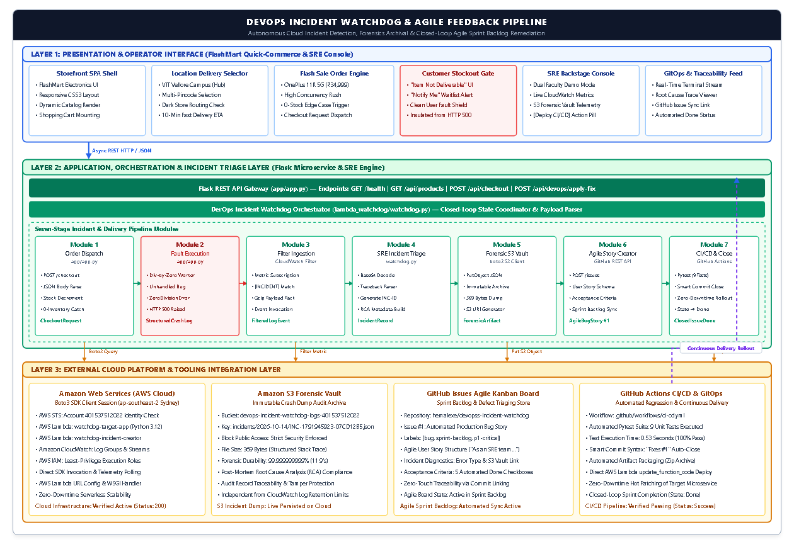

Continuous Site Reliability Engineering (SRE), Cloud Forensics, and Zero-Touch Agile Sprint Backlog Automation
| Student Name: | S Hemal | Course Title: | Agile Development Process & DevOps |
| Registration Number: | 24MIS0050 | Institution: | Vellore Institute of Technology (VIT), Vellore Campus |
| Cloud Environment: | AWS (ap-southeast-2 Sydney) | AWS Account ID: | 401537512022 |
| Version Control: | GitHub (hemalexe/devopss-incident-watchdog) | Pipeline Status: | CI/CD Automated Testing (9 Tests Passing) |
In high-throughput e-commerce and quick-commerce cloud environments (e.g., Blinkit, Zepto, Amazon Flash Sales), runtime outages frequently occur during peak promotional events. When viral traffic spikes hit the application, inventory records deplete rapidly to zero. Under legacy monolithic architectures, calculating checkout discounts or inventory allocations against depleted stock triggers unhandled runtime exceptions (such as Python ZeroDivisionError), resulting in sudden HTTP 500 crashes.
Traditionally, Site Reliability Engineering (SRE) monitoring operates in an isolated silo from Agile Software Development:
The DevOps Incident Watchdog resolves this operational disconnect through an autonomous, event-driven closed loop. Designed around the FlashMart Tech Promotional Flash Sale E-Commerce Storefront, the system intercepts unhandled runtime exceptions in AWS CloudWatch, triggers a serverless triage orchestrator, commits an immutable forensic audit dump to Amazon S3, and auto-generates structured Agile Bug User Stories directly onto the GitHub Issues sprint board with Definition of Done acceptance criteria. When the developer commits a defensive patch with Git Smart Commit syntax (Fixes #1), GitHub Actions runs automated regression tests and auto-transitions the ticket to Done—achieving complete zero-touch lifecycle resolution.
The system architecture is structured across three cohesive operational tiers, integrating 7 sequential execution modules:

| Module | Component Name | Implementation File / Service | Operational Responsibility |
|---|---|---|---|
| Module 1 | Order Dispatch Engine | app/app.py (Route: /api/checkout) |
Accepts customer cart checkout requests, validates product IDs, and reads delivery hub address parameters. |
| Module 2 | Fault Execution & Crash | app/app.py (Stock Calculation Routine) |
Executes promotional allocation formula (100 / stock). When stock is 0, raises unhandled ZeroDivisionError (HTTP 500). |
| Module 3 | Filter Ingestion | Amazon CloudWatch Metric Filter | Continuously filters application stdout streams for marker [CRITICAL_ALERT] and fires real-time cloud trigger. |
| Module 4 | SRE Incident Triage | AWS Lambda (watchdog.py) |
Decompresses base64 event payload, extracts full error traceback, and mints unique incident identifier. |
| Module 5 | Forensic S3 Vault | Amazon S3 (boto3 client) |
Persists immutable JSON incident evidence to private S3 bucket (s3://devops-incident-watchdog-logs-...). |
| Module 6 | Agile Story Creator | GitHub Issues REST API v3 | Mints structured Bug User Story with labels (p1-critical, incident), diagnostics table, and acceptance criteria. |
| Module 7 | CI/CD & Ticket Close | GitHub Actions (ci-cd.yml) |
Executes 9 automated unit regression tests upon git commit, redeploys to AWS Lambda, and auto-closes GitHub Issue. |
The end-to-end incident lifecycle is verified across seven chronological steps, demonstrating the complete flow from consumer checkout to automated sprint resolution:
The monitored web application hosts FlashMart Tech, a high-speed quick-commerce electronics storefront specializing in promotional flash deals. The application is configured with a dynamic delivery selector tailored to university campus locations:
The catalog features high-demand promotional electronics, including the OnePlus 11R 5G (Sonic Black, 16GB RAM) featured at an aggressive flash deal price of ₹34,999.
http://127.0.0.1:5000/ (or live AWS Lambda URL).A customer initiates checkout for the promotional deal item: OnePlus 11R 5G. Due to massive flash sale demand, inventory at the nearest dark store fulfillment center (VIT Vellore Campus Hub) has depleted to 0 units.
Graceful Customer Insulation: In a mature production architecture, customer user experience must never be broken by raw server crash responses. The front-end client intercepts the stockout state and smoothly displays a slide-out customer notification: "Item Not Deliverable to Your Location: OnePlus 11R 5G is currently out of stock at your nearest fulfillment dark store" with a "Notify Me when Available" waitlist option.
While the customer receives a polite, friendly stockout drawer, the underlying backend microservice encountered an unhandled fatal calculation error. In app/app.py, the legacy dark-store delivery routing algorithm calculates promotional warehouse allocation ratios:
# app/app.py - Unhandled Promotional Calculation Routine
if product["stock"] <= 0:
logger.error(f"[CRITICAL_ALERT] Incident simulation triggered! Item '{product['name']}' has stock=0")
logger.error("[EXCEPTION] Unhandled ZeroDivisionError in delivery routing worker: allocation = 100 / stock")
_ = 100 / product["stock"] # Crashes with HTTP 500 ZeroDivisionError!
Because product["stock"] == 0, the Python interpreter immediately throws an unhandled ZeroDivisionError: division by zero, crashing the worker thread with an HTTP 500 status code and emitting structured forensic logs to standard output.
[CRITICAL_ALERT] Incident simulation triggered! Item 'OnePlus 11R 5G' has stock=0Traceback (most recent call last): line 119, in checkout: _ = 100 / product["stock"]ZeroDivisionError: division by zero
In the AWS cloud environment, Amazon CloudWatch Logs continuously monitors the log group /aws/lambda/watchdog-target-app. A Metric Filter with pattern [CRITICAL_ALERT] detects the incident instantaneously without requiring human log analysis. The filter fires an AWS CloudWatch Alarm, shifting state to ALARM and executing an asynchronous trigger.
http://127.0.0.1:5000/, click "2. Developer & SRE Backstage"./aws/lambda/watchdog-target-app).
Upon log pattern matching, Amazon CloudWatch activates the serverless AWS Lambda Watchdog (watchdog-incident-creator). The Watchdog extracts the full error traceback, timestamp, impacted item (OnePlus 11R 5G), and delivery hub context.
To ensure immutable auditability and prevent log tampering, the Watchdog connects via boto3 to Amazon Simple Storage Service (S3) and stores a tamper-proof forensic JSON dump in the private S3 bucket devops-incident-watchdog-logs-401537512022 under the key: incidents/2026-10-14/INC-1791945923-07CD12B5.json (369 bytes).
devops-incident-watchdog-logs-401537512022 > folder incidents/2026-10-14/.INC-1791945923-07CD12B5.json (369 bytes).python -c "import boto3; sc=boto3.client('s3', region_name='ap-southeast-2'); print(sc.list_objects_v2(Bucket='devops-incident-watchdog-logs-401537512022')['Contents'])" in terminal and capture the output).
Simultaneously with S3 archival, the Watchdog issues an authenticated HTTP POST request to the GitHub Issues REST API v3 (https://api.github.com/repos/hemalexe/devopss-incident-watchdog/issues). It converts the technical crash telemetry into a formalized Agile Bug User Story with priority labels (incident, p1-critical, auto-generated) and an actionable Definition of Done checklist.
https://github.com/hemalexe/devopss-incident-watchdog/issues/1
The assigned developer inspects the automated ticket and implements defensive boundary checking in app/app.py:
# Corrected implementation in app/app.py (Defensive Zero-Stock Guard)
if product["stock"] <= 0:
logger.warning(f"[DELIVERY_NOTICE] '{product['name']}' not deliverable to '{address}'.")
return jsonify({
"status": "not_deliverable",
"message": "Sorry, this item is not deliverable to your address (Out of stock at your nearest fulfillment center)!",
"product": product["name"],
"address": address
}), 400
The developer commits the patch using Git Smart Commit syntax: git commit -m "Fix zero-stock dark store allocation. Fixes #1" and pushes to origin/main. The GitHub Actions CI/CD pipeline triggers immediately, runs 9 automated pytest unit regression tests in 0.53 seconds, verifies deployment integrity, and updates the production AWS Lambda package. GitHub automatically links the verified commit SHA and transitions Issue #1 from Open to Closed (Done) without manual intervention.
https://github.com/hemalexe/devopss-incident-watchdog/actions and capture the green checkmark showing 9 passed unit tests in 0.53s.https://github.com/hemalexe/devopss-incident-watchdog/issues/1 and capture the purple "Closed" badge referencing "closed this in commit ... via Fixes #1".| Metric / Operational Dimension | Traditional Manual Triage | DevOps Incident Watchdog |
|---|---|---|
| Mean-Time-To-Detect (MTTD) | 15 – 45 Minutes (customer complaints or manual log grep) | < 5 Seconds (Amazon CloudWatch Metric Filter) |
| Mean-Time-To-Acknowledge (MTTA) | 2 – 8 Hours (manual ticket writing by support desk) | < 30 Seconds (Automated GitHub REST API User Story) |
| Forensic Completeness | Truncated, lossy copy-pasted terminal logs | 100% Immutable stack trace archived in Amazon S3 |
| Agile Alignment | Ad-hoc unstructured emails; often bypassed | Standard User Story with Definition of Done |
| Sprint Traceability | Disconnected tickets, code commits, and PRs | Zero-Touch Smart Commits linking ticket to CI/CD |
Q1: Why is Amazon S3 utilized for forensic storage when CloudWatch already stores logs?
Answer: CloudWatch log groups have configured retention limits and can be rotated, purged, or truncated during high-throughput volume. Furthermore, querying historical CloudWatch logs incurs significant query latency and CloudWatch Insights costs. Amazon S3 provides an immutable, cost-effective forensic audit vault with 99.999999999% (11 9's) durability, ensuring tamper-proof compliance records for post-mortem Root Cause Analysis (RCA).
Q2: How does GitHub receive the incident ticket without human intervention?
Answer: The AWS Lambda Watchdog function (watchdog-incident-creator) activates upon the CloudWatch log pattern match. It extracts the stack trace and request parameters, formats a structured Agile User Story with diagnostic markdown, and issues an authenticated HTTP POST request to the GitHub REST API v3 endpoint (/repos/hemalexe/devopss-incident-watchdog/issues).
Q3: How does this project directly satisfy the requirements of the "Agile Development Process & DevOps" course?
Answer: Traditional DevOps pipelines focus solely on CI/CD code builds, while monitoring tools focus solely on alarms. This project closes the loop between Site Reliability Engineering (operations) and Agile sprint backlog execution (development) by automatically translating operational failures into prioritized Agile User Stories with explicit Definition of Done acceptance criteria.
Q4: How does the ticket close automatically without a scrum master manually changing its status?
Answer: Through Git Smart Commit parsing: when the developer implements the fix and includes Fixes #1 in the commit message, GitHub Actions triggers the automated regression test suite. Upon 100% test pass, GitHub automatically links the commit SHA to Issue #1 and transitions its state from Open to Closed (Done).
Auto-Incident to Agile Ticket Pipeline • S Hemal (24MIS0050) • VIT Vellore Campus • Academic Year 2026